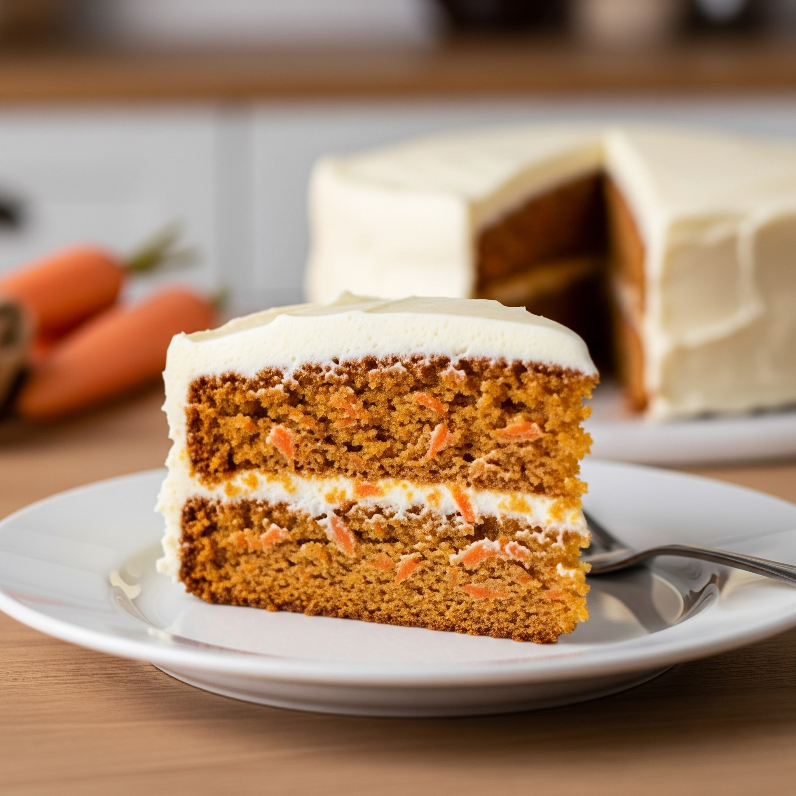

Carrot Cake
Home

Description
Carrot cake is a beloved classic, known for its moist crumb, warm spices, and decadent cream cheese frosting. It's a surprisingly easy cake to make, and the shredded carrots contribute not just flavor but incredible moisture to the cake.
Ingridients
- 2 cups (about 250g) all-purpose flour
- 2 teaspoons baking soda
- 1 teaspoon baking powder
- 1/2 teaspoon fine sea salt
- 2 teaspoons ground cinnamon
- 1/2 teaspoon ground nutmeg (optional, but recommended for warmth)
- 1/4 teaspoon ground ginger (optional)
- 1 1/2 cups (300g) granulated sugar
- 1/2 cup (100g) packed light brown sugar
- 1 cup (235ml) vegetable oil (or canola/sunflower oil)
- 4 large eggs, at room temperature
- 2 teaspoons vanilla extract
- 3 cups (about 340g) finely grated carrots (from 5-6 medium carrots, peeled)
- 1 cup (120g) chopped walnuts or pecans (optional, but adds great texture and flavor)
- 1/2 cup (70g) raisins (optional)
Steps
- Preheat Oven & Prepare Pans
- Prepare Carrots
- Combine Dry Ingredients
- Combine Wet Ingredients
- Combine Wet and Dry
- Fold in Carrots and Add-ins
- Divide Batter
- Bake
- Cool
- Cream Cheese & Butter
- Add Vanilla & Salt
- Gradually Add Powdered Sugar
- Adjust Consistency
- First Layer
- Frost First Layer
- Second Layer
- Crumb Coat (optional, but recommended)
- Chill (for crumb coat)
- Final Frosting
- Decorate (optional)
- Chill before serving